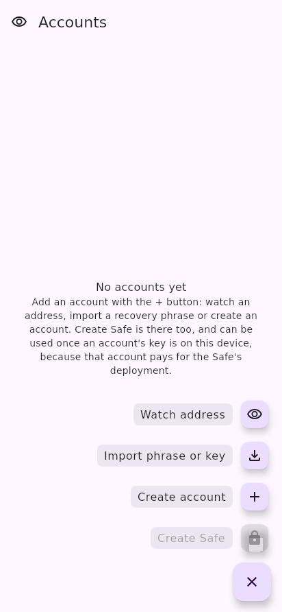
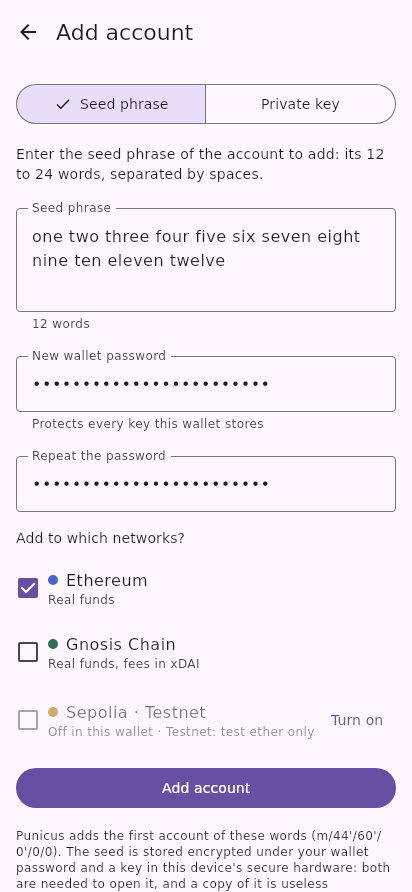

Getting started
How to put accounts into Punicus: a new one, one you already have, an address you only want to watch, and a Safe. Pick the part you need.
The kinds of account
Punicus shows a small badge beside every account that says how much control this device has over it.
An account
The ordinary kind, which wallets also call an EOA. One secret key controls it, and the key comes from a recovery phrase of 12 or more words. Whoever has the words controls the account.
Full controlA Safe
A shared account that lives on the blockchain. It has a list of owners and a rule, such as "2 of 3 owners must sign". Each owner is an ordinary account. With such a rule, no single lost or stolen key can empty it.
Co-signerA watched address
Any account or Safe whose key is not in this wallet. You see its balances and its history, and you cannot send from it.
Watch-onlyThe first start
Install Punicus from the download section and open it. The wallet starts empty.
-
Tap the + button at the bottom right.
Four choices open: Watch address, Import recovery phrase, Create account and Create Safe.
-
Create Safe is grey at first.
Creating a Safe costs a network fee, which an account in this wallet pays. Tap the grey button and Punicus tells you what is missing.
-
Give the app a minute.
On its first start Punicus catches up with the network before it can check anything. It says so on screen while it does.
Ethereum and Gnosis Chain hold real funds. To practise first, turn on Sepolia under Settings, Networks: a test network whose coins are worth nothing.
-

An empty wallet -

The + button, opened
Create a new account
For when you have no account yet, or want a fresh one. Have a pen and paper ready.
- Tap +, then Create account.
-
Write the 12 words down, in order, on paper.
This is your recovery phrase. Punicus shows it only now. Whoever has these words controls the account, and without them a lost phone means lost funds.
-
Tap I have written them down and type the three words Punicus asks for.
This checks that your copy is right.
-
Choose a wallet password of at least 8 characters and repeat it.
You set it once, with your first key. It protects every key this wallet stores, and you type it to sign.
-
Tick the networks the account should be on, then tap Create account.
The same account can be on Ethereum and on Gnosis Chain. It then appears once per network, with one key behind both.
Never photograph the words, and never type them into a website or a message. Nobody from Punicus will ever ask for them.
-

The words to write down (these are examples) -

Three words asked back -

The password and the networks
Bring in an account you already have
For an account from another wallet app, when you have its recovery phrase.
- Tap +, then Import recovery phrase.
- Type the words, 12 to 24 of them, with spaces between.
- Enter your wallet password, or choose one if this is your first key.
-
Tick the networks, then tap Add account.
Punicus adds the first account of the phrase, the one most wallets show first.
The phrase is stored encrypted on this device, under your wallet password and your device's security chip. It goes nowhere else.
-

Importing a recovery phrase
Add another account from the same phrase
One recovery phrase holds many accounts. For a second or third one, you do not need the words again.
- Press and hold an account you created or imported, in the list.
- Choose New account from the same phrase.
-
Enter your wallet password and tap Add account.
Punicus adds the next account of that phrase. Your written copy of the words covers it too.
-

A further account, without the words
Watch an address
For an account whose key is somewhere else: a hardware wallet, a friend's account, a savings account you only want to look at.
- Tap +, then Watch address.
-
Paste the address, or type an ENS name like name.eth.
Gnosis Chain has no such names: use the address there.
-
Read the card Punicus shows.
It looks the address up on the chain and says what it found: an account, a Safe or another contract.
- Give it a name if you like, then tap Add.
-

An ordinary account, watched
Add a Safe you already have
For a Safe that exists already, made in Punicus on another device or in another Safe app. A Safe has no recovery phrase of its own: you add it by its address.
- Tap +, then Watch address.
-
Paste the Safe's address.
Punicus recognises a Safe by itself and shows its version, its rule (such as 2 of 3) and its owners, all read from the chain.
- Tap Add.
-
To sign for the Safe, add your owner account too.
Create or import the account that is one of the Safe's owners, as described above. The Safe's badge then changes from Watch-only to Co-signer, or to Full control when this wallet holds enough owners to meet the rule.
A Safe lives on one network: add it on the network it was created on. Punicus signs for Safes of version 1.3.0, 1.4.1 and 1.5.0. It shows older ones and signs nothing for them.
-

Punicus recognises the Safe and its owners -

The Safe, once added
Create a new Safe
You need one account in this wallet with a little of the network's coin (ETH on Ethereum, xDAI on Gnosis Chain) to pay the fee for creating it.
- Tap +, then Create Safe, and choose the network.
-
Step 1 of 3: choose the owners.
Tick your own accounts, and add the other owners by address or ENS name: a second device, a hardware wallet, the people you share the Safe with. You can give the Safe a name that only this device sees.
-
Step 2 of 3: set the rule.
Choose how many owners must sign each transaction. Punicus says what each choice means if one owner loses a key. It does not offer a rule where every owner must sign, such as 2 of 2: one lost key would lock the Safe for good.
-
Step 3 of 3: review, then sign and deploy.
You see the Safe's future address, its owners and rule, the account that pays, and the most the fee can be. Sign with your wallet password, or with your fingerprint or face if you turned that on.
-
Wait for the confirmation.
Once the network has confirmed it, Punicus checks the new Safe on the chain and lists it by itself.
Then give the Safe's address to the other owners. Each of them adds it as described under "Add a Safe you already have".
-

Step 1: the owners -

Step 2: the rule -

Step 3: the review
What to do next
Receive something
Open an account and tap Receive. It shows the account's address as text and as a QR code, with the network it is on. Send only that network's assets to it.
Send from a Safe, together
Open the Safe, tap Send and sign. Then tap Share request and pass the text, or its QR code, to another owner by any messenger. They open the Safe in their Punicus, choose Import a request and paste the text. Their app checks it against the chain before they sign. Once enough owners have signed, any of them sends it.
Turn on fingerprint or face unlock
Under Settings, Security. It is optional, and your wallet password keeps working. Keep the password somewhere safe: without it the keys on this device cannot be opened.